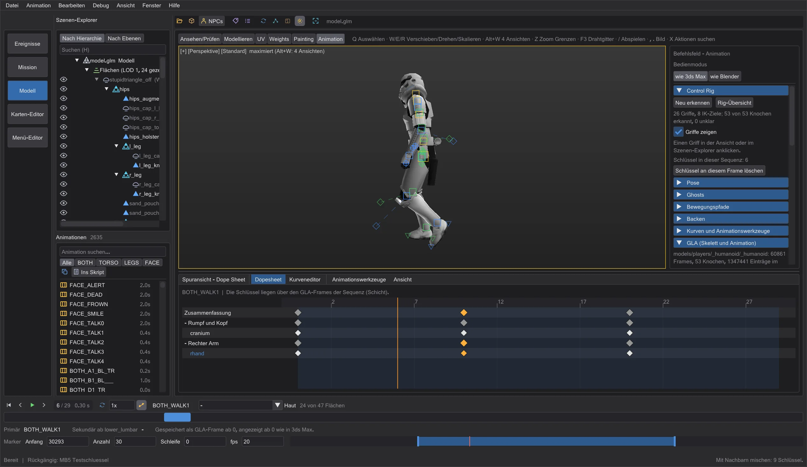
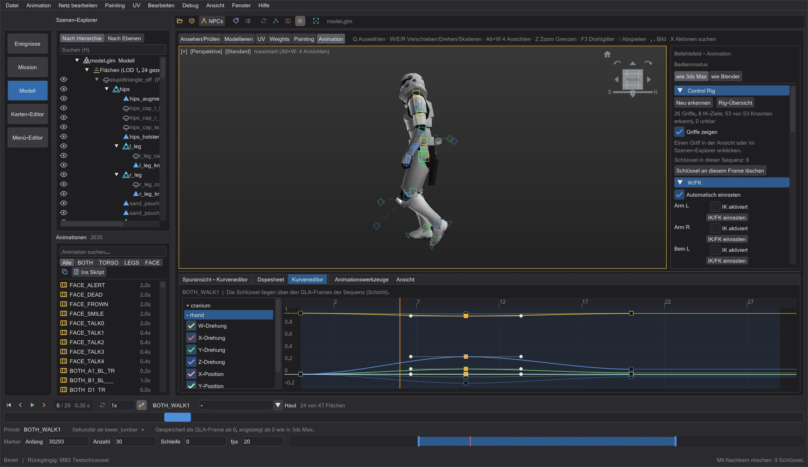
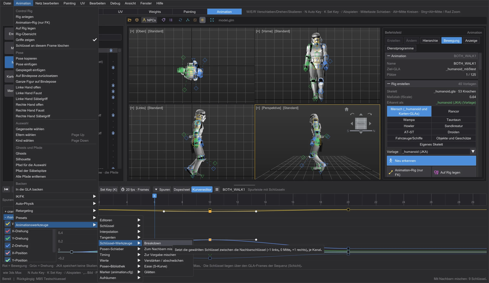
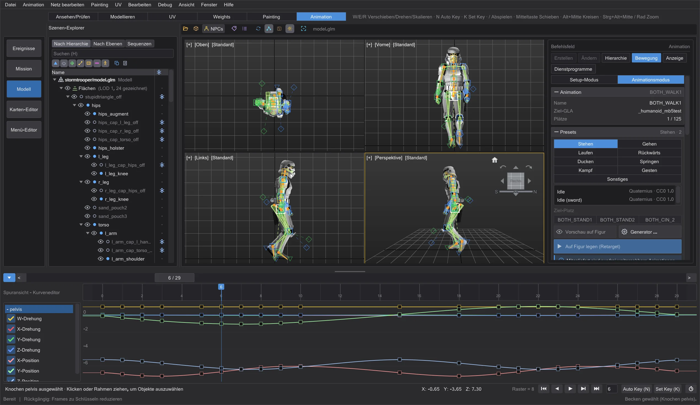

Model-Tab: Dopesheet, Kurveneditor und Animationswerkzeuge
Die Schlüssel des Control Rigs in der Zeit und als Kurven bearbeiten, mischen und ausgleichen, Timing und Werte ändern, ganze Sequenzen spiegeln, Posen in einer Bibliothek ablegen, gebackene Frames zu wenigen Schlüsseln reduzieren und den Beckenpfad in der Ansicht ziehen.

Dopesheet#
Dopesheet (Menü Animation > Animationswerkzeuge > Editoren, der Rechtsklick der Ansicht, die Suche X/F3 oder der Rollout Kurven und Animationswerkzeuge) öffnet ein eigenes Fenster unter den Ansichten; wie 3ds Max heißt es Spuransicht - Dope Sheet, wie Blender Dope Sheet. Es belegt nur Platz, solange es offen ist, und lässt sich andocken. Links stehen die Zeilen: Zusammenfassung, eine Sammelzeile je Glied (Klick klappt zu) und eine Zeile je Knochen; rechts ist jeder Schlüssel der gewählten Sequenz eine Raute. Eine Raute anklicken wählt sie (Umschalt fügt hinzu), ein Rahmen um Schlüssel wählt sie, gewählte Schlüssel ziehen verschiebt sie in der Zeit - immer um ganze Frames, weil die GLA ganze Frames speichert. Ein Klick auf eine Sammelzeile wählt alle Schlüssel dieses Frames im Glied. Das helle Band ist die Sequenz der animation.cfg-Zeile, die orange Linie der aktuelle Frame; ein Klick ins Lineal setzt ihn. Das Rad zoomt, die mittlere Taste schiebt. Nur animierte und Nur ausgewählte filtern die Zeilen, Alles zeigen passt die Sequenz ein. Wie Blender löscht X, verschiebt G und skaliert S die gewählten Schlüssel, solange die Maus über dem Editor steht.
Kurveneditor#
Kurveneditor (wie 3ds Max Spuransicht - Kurveneditor, wie Blender Graph-Editor) zeigt eine Kurve je Kanal: die Drehung als Quaternion W-Drehung, X-Drehung, Y-Drehung, Z-Drehung und die Verschiebung X, Y, Z. Ein Klick auf einen Knochen links klappt seine Kanäle auf, dort lassen sich einzelne Kurven ein- und ausblenden. Einen Schlüssel nach oben oder unten ziehen ändert den Wert dieses Kanals, zur Seite verschiebt ihn um ganze Frames; einen Henkel ziehen formt die Kurve. Interpolation setzt konstant, linear (dreht auf dem kürzesten Bogen, slerp) oder Bezier ab dem gewählten Schlüssel bis zum nächsten. Tangenten setzt die Henkel: wie Blender Automatisch geklemmt (Vorgabe neuer Schlüssel, schießt nie über), Automatisch, Vektor, Ausgerichtet und Frei; wie 3ds Max heißen dieselben Arten Automatisch, Glatt, Linear, Benutzerdefiniert und Benutzerdefiniert (getrennt). Die Bezier-Kurven rechnen genau wie die F-Kurven von Blender (Henkelregel, Continuous Acceleration, Auswertung); ein gezogener Auto-Henkel wird wie dort Ausgerichtet, ein Vektor-Henkel Frei. Strg+Rad zoomt die Werte. Für die Pose wird das Quaternion normiert, die Figur dreht also immer starr.

Animationswerkzeuge#
Jedes Werkzeug steht im Menü Animation > Animationswerkzeuge, im Rechtsklick des Editors und der Ansicht und in der Suche, jedes mit Tooltip. Die Schlüssel-Werkzeuge wirken auf die gewählten Schlüssel, Kanal für Kanal: Breakdown, Zum Nachbarn mischen, Zur Vorgabe mischen, Verstärken / abschwächen, Ease (S-Kurve) und Glätten. Die Posen-Schieber setzen die Pose am aktuellen Frame aus dem vorigen und nächsten Schlüssel: Breakdowner, Pose verstärken, Pose entspannen, Mit Nachbarn mischen, Zur Ruhepose mischen. Jedes öffnet einen kleinen Regler; die Ansicht zeigt das Ergebnis schon beim Ziehen, Übernehmen behält es als einen Rückgängig-Schritt, Abbrechen stellt es wieder her. Timing: die Auswahl auf den aktuellen Frame einrasten (oder so verschieben, dass der erste bzw. letzte Schlüssel dort liegt), am aktuellen Frame Frames einfügen oder entfernen, Zeitversatz, Schlüsselzeiten teilen (auch genau die des zuletzt gewählten Knochens). Werte: Null, auf den aktuellen Wert, negieren, umkehren, am aktuellen Frame spiegeln; Anim-Offset überträgt eine Änderung an einem Schlüssel auf die anderen Schlüssel des Knochens. Animation spiegeln (links/rechts) spiegelt die ganze Sequenz über die l_/r_-Knochen. Die Posen-Bibliothek legt benannte Posen im Modelldokument ab und setzt sie wieder, auch gespiegelt. Die Marker (animation.cfg) nutzen die animation.cfg-Zeile: Schlüssel an ihrem ersten und letzten Frame, Schleife schließen, die Schlüssel darin wählen.

Aufräumen und Reduzieren#
Eine GLA speichert jeden Frame. Frames zu Schlüsseln reduzieren macht aus den Frames der gewählten Sequenz (mit den Rig-Schlüsseln darüber) wenige bearbeitbare Schlüssel: je Knochen kommen Schlüssel dorthin, wo die Kurve am weitesten abweicht, danach fällt jeder unnötige wieder weg; linear und Bezier werden beide versucht, das mit weniger Schlüsseln bleibt. Die Schlüssel beschreiben dann die ganze Bewegung über der Bindepose. Die Regel ist die Grenze von compressBone aus Stufe 3: wieder gebacken dreht jedes Knochen-Frame innerhalb der Rundung, die das GLA-Format selbst zulässt, und die Verschiebung weicht höchstens um eine 1/64-Stufe ab. Gemessen an jeder Sequenz von _humanoid: Jedi Academy behält 58 % der Knochen-Frames als Schlüssel, Jedi Outcast 66 %, Movie Duels 43 %, jedes Knochen-Frame innerhalb der Grenze. Überflüssige Schlüssel entfernen entfernt Schlüssel, die ihren Nachbarn gleichen, Statische Kanäle entfernen behält einen Schlüssel für Knochen, die sich nicht bewegen, Quaternion-Filter gibt jedem Quaternion das Vorzeichen seines Nachbarn, damit die Kurven nicht springen (die Kanäle sind Quaternionen, ein Euler-Filter ist nicht nötig). Das Ergebnis wie bisher mit In die GLA backen auf den Platz des Ziels backen.

Bewegungspfade ziehen#
Auf dem Pfad des Beckens oder der Wurzel (Pfad für die Auswahl) lässt sich jeder Punkt in der Ansicht ziehen: der Knochen geht an diesem Frame dorthin, in der Bildebene durch den Punkt, und bekommt einen Schlüssel (Strg+Z nimmt ihn zurück). Mit Anim-Offset gehen die anderen Schlüssel mit. An den Pfaden von Händen, Füßen und Säbelspitze bewegt der Punkt das IK-Ziel (Seite IK/FK).